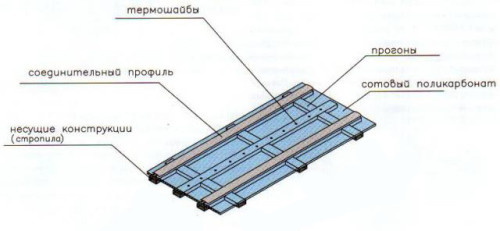
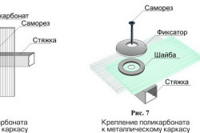
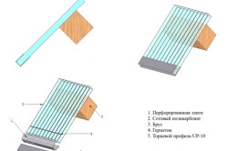
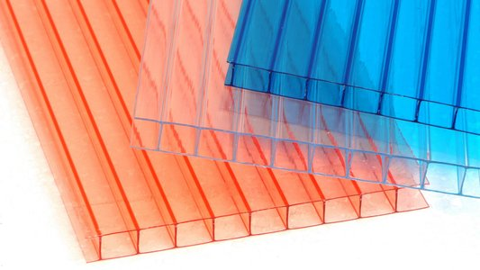
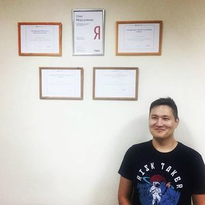
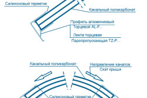
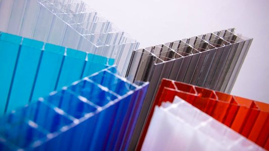
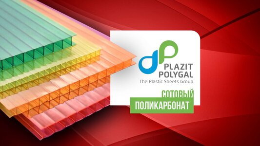
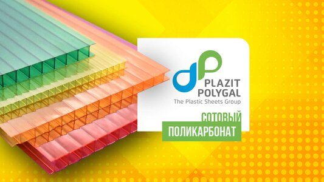
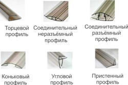

Как работать с поликарбонатом
В строительстве очень часто используется универсальный материал поликарбонат. Это крепкий прозрачный материал, который практически не деформируется. Существуют различные вариации оттенков. Из поликарбоната можно построить множество строений на даче и в загородном доме: это может быть веранда, беседка, теплица, парник либо целый внутренний дворик.

Схема покрытия сотовым поликарбонатом.
С использованием поликарбоната можно выполнить ремонт своими руками различных участков крыши. Некоторым по душе приходится забор из этого материала. При помощи поликарбоната можно построить гараж или навес для автомобиля. Монтаж своими руками поликарбоната выполнить очень просто: для этого не требуются специальные умения или инструменты. В качестве каркасов для этого материала можно использовать металл или дерево.
Монолитный поликарбонат: монтаж
Из монолитного поликарбоната можно сконструировать перегородки либо стены. Стоит учитывать, что этот материал обладает отличными звукоизолирующими свойствами. Декорирование поликарбонатом своими руками можно выполнять как снаружи помещения, так и внутри. Наибольшей прочностью обладают листы квадратной формы. Не стоит использовать монолитный поликарбонат для сооружения арочных конструкций.

Схемы крепления листов поликарбоната к металлическому каркасу.
Поликарбонат своими руками можно использовать для сооружения скатных либо наклонных крыш, настила плоских стен. Установка панелей может производиться одним из методов: сухим или влажным. Монтаж поликарбоната следует производить на заранее зафиксированные рамы.
Для того чтобы выполнить монтажные работы влажным способом, следует подготовить полимерную замазку. Средство необходимо нанести по всему периметру рамы. После этого лист поликарбоната необходимо плотно прижать к раме и убрать излишки замазки. Крепление листов следует выполнить либо за два самых сильных участка, либо по углам. Следующий шаг — нанесение по всему периметру конструкции слоя герметика.
Для того чтобы немного украсить внешний вид конструкции, можно воспользоваться уголками из пластика или деревянными планками. Подобное крепление подходит как для конструкций из металла, так и из дерева. Одним из недостатков влажного крепления является не слишком аккуратное выполнение работы. В любом случае замазка должна выступать за краями листов поликарбоната.
Для того чтобы получились более аккуратные стыки, можно воспользоваться сухим методом монтажа. Листы поликарбоната своими руками можно закрепить при помощи специальных профилей, оснащенных уплотнителями и прокладками. Этот способ несколько дороже предыдущего, но итоговый результат выглядит более эстетично, чем предыдущий. Все соединения в конструкции можно выполнить при помощи шурупов, гаек и болтов.
Укладывая поликарбонат своими руками на поверхность крыши, следует усилить проблемные места при помощи перекладин, чтобы исключить возможность прогиба материала под воздействием снега.

Схема крыши из поликарбната.
Материалы, необходимые для монтажа поликарбоната:
Отец Юлии Началовой: "Мою дочь сгубили, вытащив из нее 9-ти метровую..."
Вернуться к оглавлению
Сотовый поликарбонат: особенности монтажа
Для наружных работ (сооружения внутренних двориков, навесов или беседок) целесообразно использовать ячеистый или сотовый поликарбонат. Этот материал не только обладает значительно меньшей ценой, чем монолитный, но и может принимать дугообразную форму. Так, для сооружения на участке купольной крыши либо подобия арочного строения использование ячеистого поликарбоната будет оптимальным вариантом.
В продажу сотовый поликарбонат поступает в листовом виде. Его можно разрезать при помощи высокоскоростной пилы, электрического лобзика, ножа. Также при помощи сверла в нем легко проделываются отверстия. Для этого следует зафиксировать лист при помощи тисков или придержать руками. Оптимальное место для сверления отверстия — между ребер, при этом нужно соблюдать расстояние от края не менее 4-х см.
Выполняя ремонт поликарбоната, следует учитывать, что все торцы материала должны тщательно и герметично закрываться. С этой целью можно использовать алюминиевые профили, при помощи которых можно выполнить максимально плотную фиксацию. Использование перфорированного профиля позволяет избежать необходимости сооружения устройств для слива конденсата. При использовании гладкого листа поликарбоната обязательно необходимо сверлить сливные отверстия.
Яндекс.ДиректЛистовой поликарбонат – продажа!!box-plastic.ru Вступайте в Союз Писателей!isp-org.ru Восстановление данныхrostov-cs.ru Создание сайтов Ростов-на-Донувебпрофит.рф

Схема монтажа сотового поликарбната.
Верхние торцы поликарбоната следует закрыть при помощи алюминиевой ленты, нижний — при помощи перфорированной ленты, выполняющей одновременно две функции: отвод влаги из конструкции и защиту внутренней поверхности поликарбоната от пыли. Ни в коем случае не нужно закрывать нижние торцы листов герметично.
На листах поликарбоната находятся ребра жесткости. Поликарбонат своими руками следует располагать так, чтобы образовывающийся внутренний конденсат стекал наружу по этим ребрам. Получается, при выполнении установки поликарбоната в вертикальном положении, ребра жесткости должны располагаться аналогично. В скатных крышах и арочных конструкциях ребра жесткости следует расположить по дуге.
Каждая панель из поликарбоната снабжается заводской инструкцией, в которой указывается радиус максимально возможного изгиба. При несоблюдении этого условия возможна поломка листа.
Панели соединять с каркасом следует не по всей их длине, а точечным способом с использованием саморезов либо термошайбы, способных обеспечить надежную фиксацию конструкции. Под термошайбу следует проделывать отверстие, несколько превышающее диаметр ее ножки. Допустимый шаг крепления — 40 см. Панели из поликарбоната не нуждаются в жестком крепеже, в конструкции должна присутствовать определенная степень свободы во избежание деформации листов. Монтаж поликарбоната можно производить с использованием неразъемных или разъемных профилей.
Проще всего работать с неразъемными профилями. Профиль следует вставить в паз, расположенный в панели, закрепить образовавшуюся конструкцию на каркасе. Главная особенность — правильный подбор толщины панели, соответствующий определенному профилю. Крепеж конструкции осуществляется с использованием термошайб.
Яндекс.ДиректСотовый поликарбонат в Ростоверостовполикарбонат.рф →Привезем бесплатно! Цветной, прозрачный сотовый поликарбонат. От 4 до 25 ммСотовый Поликарбонат – Недорого!polikarbonat-rostov.ru →Сотовый Поликарбонатот производителя, все цвета и размеры. Экспресс доставка! Звони!Поликарбонат Оптом – Любой объем!polygal-rostov.ru →Поликарбонат Оптом от производителя, всех цветов и размеров. Экспресс доставка!

Схемы профилей поликарбоната.
Гораздо сложнее крепятся профили разъемного типа. Состоит такой профиль из крышки и базы. Крышку следует снять перед монтажными работами, потом одеть и на основе защелкнуть. Для того чтобы был правильно выполнен монтаж поликарбонатной плиты, отверстия под саморезы следует проделывать несколько большего размера, чем они сами, соблюдая шаг в 30 см. После этого основу можно закрепить на каркасе и зафиксировать все герметиком. Далее необходимо уложить панели, соблюдая зазор в 5 см, сверху надеть крышку профиля и закрыть при помощи заглушки.
Другие разновидности соединений можно выполнить с пристенными, угловыми или коньковыми профилями. Выполняя ремонт своими руками, следует учитывать степень термического расширения участков, находящихся под воздействием солнца. Также не стоит забывать и о том, что прозрачные листы способны прогреться значительно меньше, чем цветные.
Если во время монтажных работ следовать четко инструкции, проблем не должно возникнуть.
Особенности работы с поликарбонатом своими руками
Монтаж листов поликарбоната очень просто выполнить в одиночку, но с использованием помощников процесс может завершиться в несколько раз быстрее.
Во время установки поликарбоната в вертикальном положении, следует учитывать то, что соты должны располагаться аналогично всему листу: вертикально. Это правило необходимо учитывать, для того чтобы конденсат, который будет образовываться вследствие перепадов температуры, мог свободно скатываться вниз, не накапливаясь в плоскостях сот поликарбоната.
Сооружая кровлю из этого материала, следует учитывать то, что максимально возможный уровень наклона должен равняться 12°. Соединения листов и ребер жесткости должны располагаться по направлению сверху вниз. При расположении ребер в горизонтальном направлении, существует большая вероятность продавливания конструкции снегом.
�